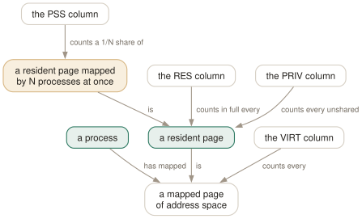

Day 03
The memory columns
VIRT, RES, SHR, PRIV, PSS — five answers to “how much memory”, four of which you must not add up.
By the end of today you can
- say what each memory column counts, and which single one is safe to add up across processes
- explain a 1.4 TB VIRT next to a 650 MB RES without alarm
- read htop's sizes correctly, including the suffix that is not there
Five columns, one pile of pages
There is no such thing as “the memory a process is using”. There is a set of pages, some of them resident and some not, some of them mapped by one process and some by twenty — and each memory column is a different accounting policy over that set. Learn the policies and the columns stop contradicting each other.
Here is a real row from the machine this course was checked against, a Chrome renderer, with every memory column on screen at once:
PID USER VIRT RES SHR PRIV SWAP PSS PSSWP EPSS MEM%
15201 jhrcek 1454G 658M 150M 508M 0 500M 0 500M 1.0
1454 gigabytes and 658 megabytes are the same process, in the same instant. Neither is a typo.

RES across a process tree and every shared page is counted once per process; sum PRIV and you miss the shared pages entirely. VIRT sits furthest from reality of all — it counts address space that may never be touched.From address space to fair shares
VIRT(M_VIRT)- Everything the process has mapped, touched or not. Includes files mapped but never read, arenas reserved but never allocated, and guard regions that exist to stay empty. On 64-bit machines address space costs nothing, so large programs do not ration it. Almost never the number you want.
RES(M_RESIDENT)- Pages genuinely in RAM right now — text, data and stack. The honest answer to “is this process big”, and the one MEM% is computed from. Counts shared pages in full, which is why you cannot add it up.
SHR(M_SHARE)- The part of RES that somebody else maps too: libraries, the executable, copy-on-write pages not yet written to.
PRIV(M_PRIV)- RES minus SHR — the pages that belong to this process alone and die with it. A default column in htop 3, and the right number for “how much would restarting this free”.
PSS(M_PSS)- RES again, but every shared page divided by the number of processes sharing it. The only column that sums correctly across processes.
SWAP/PSSWP/EPSS- Swapped-out pages, the same proportional treatment applied to them, and
PSS+PSSWPtogether.EPSSis the closest thing htop has to a single honest footprint.
Why you must not add these up
Six browser processes showing 500M of RES each are not using 3 GB. They share the binary, every library, the fonts, and a large copy-on-write heap inherited at fork. RES charges each of those pages in full to every process that maps it, so the sum counts them six times over.
The five biggest renderers on the machine this course was checked against:
RES PSS
15201 658M 500M
9599 531M 375M
10100 485M 324M
15453 427M 262M
10092 409M 264M
───── ────── ──────
total 2510M 1725M <- RES overstates by ~785M, about 45%
This is the whole reason PSS exists. Divide each shared page by its number of sharers and every page of physical memory is charged exactly once across the entire process list — so a column of PSS values can be added up, and the total means something.
The privilege wall in front of PSS
RES, SHR and PRIV come from /proc/[pid]/statm: world-readable, three numbers, effectively free to read. PSS needs /proc/[pid]/smaps_rollup, which the kernel walks page table by page table and only shows you for processes you own.
$ grep -E '^(Rss|Pss|Swap):' /proc/self/smaps_rollup
Rss: 10280 kB
Pss: 6076 kB
Swap: 0 kB
$ grep Pss /proc/1/smaps_rollup
grep: /proc/1/smaps_rollup: Permission denied
The suffix that is not there
htop prints sizes in powers of 1024, and a number with no suffix is in KiB. So 22080 is 21.6 MiB, 234M is 234 MiB, and 1454G is 1454 GiB.
The reasoning is in the manual page's MEMORY SIZES section and it is a good one: memory is allocated in whole pages, 4 KiB on most platforms, so kibibytes are the granularity that actually exists. Dropping the suffix saves a character on every row of a screen that is always short of width.
It is still the most common misreading of an htop screen, because every other tool you use prints its units. Read a bare number as “thousands of kilobytes” once or twice and it will stop catching you.
Today's habit
Pick the one service you are responsible for and learn its normal RES and PRIV. Not its peak, not its VIRT — its ordinary Tuesday-afternoon numbers. Memory problems are almost always noticed as a change, and you cannot see a change against a baseline you never had.
Tomorrow: four different ways to find a process, and why people keep reaching for the wrong one.
New vocabulary
Options
| Option | Does |
|---|---|
M_VIRT | Address space the process has mapped. VIRT. Mostly promises, not memory. |
M_RESIDENT | Pages actually in RAM, shared ones counted in full. RES. |
M_SHARE | The part of RES that other processes also map. SHR. |
M_PRIV | Resident minus shared — what dies with the process. PRIV, a default column. |
M_SWAP | Pages of this process pushed out to swap. SWAP. |
M_PSS | Resident, but each shared page divided by its number of sharers. PSS. |
M_PSSWP | The same proportional treatment for swapped-out pages. PSSWP. |
M_EPSS | PSS plus PSSWP: the whole footprint, proportionally. EPSS. |
PERCENT_MEM | RES as a share of total RAM. MEM% — and it inherits RES's double counting. |
Drillsdo these in a real terminal, today
Self-check
Answer out loud first, then unfold.
A monitoring dashboard alerts that a Chrome renderer is using 1454G of memory on a machine with 62 GB of RAM. What is it looking at, and what should it have looked at?
M_VIRT — address space, not memory. A process reserves address ranges far larger than anything it will touch: guard pages, sandbox arenas, memory-mapped files, thread stacks it has not grown into. On 64-bit machines address space is free, so nobody economises, and browsers and JITs habitually map terabytes.
The number that would have meant something is M_RESIDENT — pages actually in RAM — or better M_PSS, which does not double-count what the process shares with its twenty siblings. VIRT is worth watching for exactly one thing: a process whose address space grows without bound is leaking mappings, which is a real if rare bug.
You sort by PSS to find the real memory hogs, and every system daemon drops to the bottom with a PSS of zero — including ones whose RES is clearly not zero. Have you found a very efficient daemon?
No. You are not root. RES, SHR and PRIV come from /proc/[pid]/statm, which is world-readable and cheap. PSS needs /proc/[pid]/smaps_rollup, which the kernel only lets you read for processes you own.
htop does not mark this: it prints 0, which sorts like a real zero rather than like the - the manual page uses for genuinely unavailable data. So an unprivileged PSS sort silently ranks the entire system half of your machine at the bottom. Run htop under sudo when the question is about memory you do not own.
Six browser processes each show RES around 500M. Is the browser using 3 GB?
Almost certainly not. RES counts every resident page in full, including pages that several processes map at once — the shared libraries, the binary itself, the fonts, the copy-on-write heap inherited from the zygote. Add six RES values together and you have counted each of those pages six times.
On the machine this course was checked against, five Chrome renderers summed to 2510M of RES but only 1725M of PSS — the sum overstated by about 45%. PSS exists precisely so that the column can be added up: each shared page is divided by the number of processes sharing it, so every page in the machine is counted exactly once across the whole list.
A row shows RES of 22080 and another shows 234M. Which is bigger, and by how much?
The second, by about eleven times. A bare number in htop is kibibytes — the suffix is omitted rather than absent, so 22080 means 22080 KiB, which is 21.6 MiB. Everything is powers of 1024: M is MiB, G is GiB.
The manual page explains the reasoning, and it is sound: memory is allocated in whole pages of 4 KiB, so kibibytes are the natural unit and dropping the suffix buys a column of screen width on every row. It is still the single most common misreading of an htop screen, because every other tool you use prints its units.
Cheat sheet
VIRT address space mapped -- mostly promises; ignore unless it GROWS
RES pages in RAM, in full -- 'is it big?' MEM% comes from this
SHR the shared part of RES -- libraries, the binary, COW pages
PRIV RES - SHR -- 'what do I free by killing it?'
PSS RES, shared pages / N -- the ONLY column you may add up
SWAP pushed out to swap -- PSSWP = the proportional version
EPSS PSS + PSSWP -- the whole footprint, counted once
RES = SHR + PRIV holds on every row, always
a bare number is KiB 22080 -> 21.6 MiB, not 22 kB
PSS shows 0, not '-', for processes you do not own (needs smaps_rollup)
Sum RES across a process tree and shared pages are counted once per process; sum PRIV and they vanish. Only PSS charges each page of physical memory exactly once across the whole list.
Everything through Day 03
Keys
| Key | Does |
|---|---|
| Ctrl-L | Redraw the screen and recalculate, without waiting for the next tick. |
| Z | Pause and resume sampling. The screen freezes; the machine does not. |
| F10q | Quit. This is also the only exit that saves your settings. |
| UpDown | Move the selection one row. Alt-k and Alt-j do the same. |
| PgUpPgDn | Move the selection a screenful at a time. |
| HomeEnd | Jump to the first or the last process in the list. |
| LeftRight | Scroll the whole list sideways. Also Alt-h and Alt-l. |
| Ctrl-A^ | Scroll back to the start of the selected process's line. |
| Ctrl-E$ | Scroll to the end of the selected process's line. |
| Alt-UpAlt-Down | Pan the view without moving the selection. Shift-Up/Shift-Down too, if your terminal lets them through. |
| p | Toggle full program paths in Command. |
| m | Toggle merging exe, comm and cmdline into Command. |
Commands
| Command | Does |
|---|---|
htop | Start htop, reading ~/.config/htop/htoprc once at startup. |
htop -d 10 | Sample every 10 tenths of a second. Clamped to the range 1–100. |
htop -n 5 | Draw five frames, then exit on its own. Absent from the manual page. |
htop -V | Print the version. The -v in the SYNOPSIS does not exist. |
Options
| Option | Does |
|---|---|
delay | Tenths of a second between samples in htoprc. Default 15, i.e. 1.5 s. |
M_VIRT | Address space the process has mapped. VIRT. Mostly promises, not memory. |
M_RESIDENT | Pages actually in RAM, shared ones counted in full. RES. |
M_SHARE | The part of RES that other processes also map. SHR. |
M_PRIV | Resident minus shared — what dies with the process. PRIV, a default column. |
M_SWAP | Pages of this process pushed out to swap. SWAP. |
M_PSS | Resident, but each shared page divided by its number of sharers. PSS. |
M_PSSWP | The same proportional treatment for swapped-out pages. PSSWP. |
M_EPSS | PSS plus PSSWP: the whole footprint, proportionally. EPSS. |
PERCENT_MEM | RES as a share of total RAM. MEM% — and it inherits RES's double counting. |